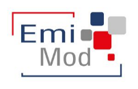
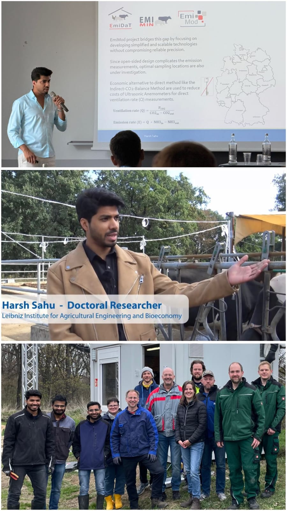

Analytics-Automation Scientist · PhD Researcher
From barn air
to climate action.
I turn agricultural measurements into evidence—for science, Scope 3 and a resilient farm-to-fork system.



Current project · Nationwide collaboration
Measuring emissions together.
EmiMod brings leading German research and public institutions together to improve how emissions from livestock buildings are measured, modelled and assessed.
My role · three work packages +
- WP 4Automated IoT sensor systems for scalable emission measurement.
- WP 6Quality assurance of reference methods for dairy-barn CH₄ and NH₃ emissions.
- WP 10Predictive and advanced statistical modelling of emissions.
Project partners
01 / The gap
Scope 3 needs better primary data.
How I help +
I connect farm activity, animals, housing, weather and continuous sensors to governed datasets with QA, metadata, uncertainty and provenance—ready to scale from barn and farm decisions to product footprints, value-chain reporting and national research.
Sensor→Barn→Farm→Scope 3→National
02 / Open tools
03 / Field notes · select a story
 SciencePrecision before scale.
SciencePrecision before scale.
At RAMIRAN 2025: testing how sampling position changes reported CH₄, NH₃ and CO₂ in naturally ventilated barns.
 Public impactSensors people can see.
Public impactSensors people can see.
Demonstrating low-cost environmental sensing at Grüne Woche 2025 in Berlin—making invisible gases understandable.
 IndustryResearch meets the market.
IndustryResearch meets the market.
Representing Leibniz ATB at EuroTier in Hannover and listening to the measurement problems industry needs solved.
NetworkMethods cross borders.
Hosting Dutch colleagues and discussing harmonised livestock-emission measurements across Germany and the Netherlands.

LeadershipExplain. Coordinate. Deliver.
From field campaigns to conference stages: building teams around clear methods, rigorous QA and shared scientific purpose.
04 / Watch
05 / Reporting
Evidence ready for scrutiny.
CSRD · ESRS E1 +
Traceable inputs and calculation lineage for material GHG disclosures.
SBTi · FLAG +
Farm and supplier evidence for agricultural value-chain targets and Scope 3 progress.
EU CRCF +
Activity data for baselines, quantification, monitoring and carbon-farming evidence.
Assurance-ready +
Methods, versions, QA decisions and uncertainty prepared for independent scrutiny by SGS, TÜV organisations or appropriately DAkkS-accredited bodies.
Tools support traceability and reporting automation; they do not themselves confer compliance, certification or verification.
Leibniz ATB · Freie Universität Berlin · EmiMod · EurAgEng YPN